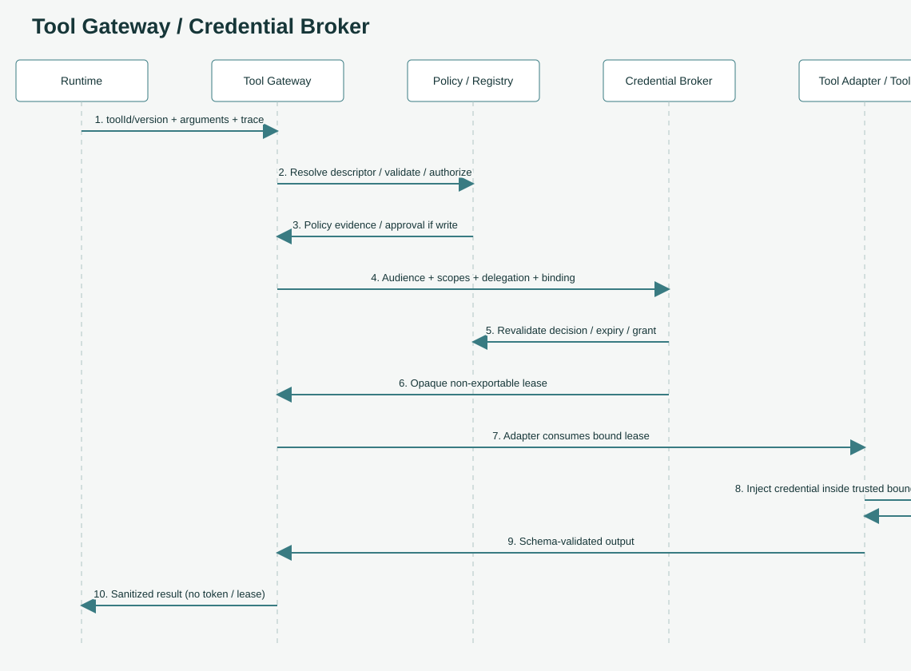

Agent Platform APIs: 요청 하나 따라가기
개발자 가이드 문서입니다. 규범은 아키텍처, Agent Tools, Agent Identity 기술 표준 문서가 기준입니다.
지금까지 청구서 Agent의 하루에서 장면 열한 개를 한 번 훑었습니다. 이제 첫 장면부터 하나씩 들여다봅니다. 등장인물은 재무팀 담당자 서연, Agent를 만든 개발자 민준입니다.
장면
서연이 재무팀 업무 앱에 "청구서 INV-2048 요약해 줘"라고 입력합니다(요청 A). 앱은 이 문장을 플랫폼의 정문인 Agent Platform APIs로 보냅니다. 응답이 조금 늦자 앱이 같은 요청을 한 번 더 보냅니다. 그런데 Agent는 한 번만 실행됩니다. 정문이 "이 요청은 이미 받았다"는 것을 알아봤기 때문입니다. 정문은 그 전에 서연이 누구인지부터 확인했습니다.
Agent Platform APIs가 없다면 Agent마다 주소와 인증 방식이 달라지고, 같은 요청이 두 번 오면 두 번 실행됩니다.
무슨 일이 일어나나
요청 하나가 응답이 되기까지 다섯 단계를 지납니다. 이 장은 첫 단계인 정문을 자세히 보고, 나머지 단계는 각 장으로 이어집니다.
- 1. 진입Agent Platform APIs
인증 · 해석 · 인가 · 멱등성 - 2. 실행Agent Runtime
adapter 기반 Agent 실행 - 3. 도구 호출Agent Gateway 도구 경로
+ Credential Broker - 4. 모델 호출Agent Gateway 모델 경로
분류 기반 라우팅 - 5. 기록Agent Observability
종단 간 실행 추적
정문이 하는 일은 넷입니다.
토큰의 발급자, 대상(audience), 서명, 만료를 확인해 서연이 누구인지 정합니다.
Registry에서 invoice-summary의 고정된 버전을 찾습니다.
서연이 재무팀(finance)의 이 Agent를 부를 권한이 있는지 봅니다.
같은 요청 번호로 같은 내용이 또 오면 저장해 둔 결과를 돌려주고, 다른 내용이 오면 거부합니다.
실물 보기
서연의 앱이 보낸 요청입니다.
예시
POST /v1/agents/invoice-summary/invocations
Authorization: Bearer <회사 IdP가 발급한 access token>
traceparent: 00-<trace-id>-<span-id>-01
Idempotency-Key: <재전송 요청을 식별하는 키>
{
"input": {"type": "message", "content": "청구서 INV-2048 요약해 줘"},
"context": {"tenantId": "finance", "dataClassification": "confidential"},
"execution": {"mode": "sync", "timeoutMs": 30000}
}
Authorization: 서연이 누구인지는 여기서만 정해집니다. 본문에"role": "admin"을 적어도 권한이 생기지 않습니다.Idempotency-Key: 앱이 요청마다 붙이는 번호입니다. 다시 보낼 때 같은 번호를 쓰면 정문이 한 번으로 셉니다.context.tenantId: 토큰의 테넌트와 비교하는 데만 씁니다. 다르면 거부합니다.execution.timeoutMs: 앱이 기다릴 수 있는 시간입니다. 뒤의 모든 구간이 이 시간 안에서 움직입니다.
서연이 받은 응답과, 같은 문장을 내 PC의 로컬 mock에 보냈을 때의 실제 응답입니다. 필드 구성은 같고 agentVersion과 output.content가 다릅니다.
예시
{
"invocationId": "inv-…",
"agentVersion": "1.2.0",
"status": "succeeded",
"output": {"type": "message", "content": "한빛상사 2026년 10월분 청구서(INV-2048)입니다. 합계 12,400,000원, 납기 11월 30일입니다."},
"traceparent": "00-…-…-01",
"routeDecisionId": "route-self-hosted",
"usage": {"inputTokens": 412, "outputTokens": 58}
}
실행 결과 · 내 PC의 로컬 mock
{
"invocationId": "inv-9946215c02f347bd8ba5de71ca079905",
"agentVersion": "0.1.0",
"status": "succeeded",
"output": {"type": "message", "content": "mock:Summarize the invoice: tool:청구서 INV-2048 요약해 줘"},
"traceparent": "00-d0f1038087eb42d6b187b4c8ba5caa2a-ae9b01ef32f942d6-01",
"routeDecisionId": "route-self-hosted",
"usage": {"inputTokens": 7, "outputTokens": 7}
}
invocationId: 이 호출의 번호입니다. 문제가 생기면 이 번호로 기록을 찾습니다. 앱은 이 번호를 사용자에게 보여 줍니다.routeDecisionId: 어느 모델로 갔는지입니다. 기밀이라 회사 안 모델(route-self-hosted)로 갔습니다.- 로컬 mock의 도구와 모델은 받은 글 앞에
tool:,mock:을 붙여 돌려주는 대역이라 실제 요약은 나오지 않습니다.
직접 해 보기
- 토큰을 빼고 보내 보세요. 어느 단계에서 멈추나요.
- 하준처럼 권한이 모자란 사용자로 보내면 Agent 코드가 실행되나요.
더 해 보기: 같은 요청을 여러 번 보내기
- 같은 키로 같은 요청을 두 번 보내면 Agent는 몇 번 실행되나요.
- 같은 키에 다른 내용을 실으면 어떻게 되나요.
잘못되면
서연의 앱을 만든 개발자가 토큰을 붙이지 않으면 401을 받습니다. 정문은 누가 보냈는지 모르는 요청을 안으로 들이지 않습니다. Agent 코드는 한 줄도 실행되지 않습니다. 로그인한 사용자의 토큰을 Authorization에 실어 보냅니다.
요청 본문에 다른 팀의 테넌트를 적으면 403을 받습니다. 테넌트는 검증된 토큰에서만 정하고 본문의 값은 비교에만 씁니다. 본문을 바꿔 다른 팀의 데이터에 닿을 수 없습니다.
오류는 RFC 9457 Problem Details(application/problem+json) 형식으로 옵니다. 로컬 mock이 실제로 돌려주는 403입니다.
실행 결과 · 내 PC의 로컬 mock
{"type": "about:blank", "title": "FORBIDDEN", "status": 403, "detail": "Tenant assertion does not match authenticated identity", "code": "FORBIDDEN", "traceId": "…"}
더 보기: 권한 부족, 같은 키에 다른 내용, 그리고 비동기 호출
| 상황 | 응답 | 뜻 |
|---|---|---|
| Agent가 요구하는 권한이 호출자에게 없음 | 403 | Manifest의 requiredScopes를 모두 갖지 못했습니다. 코드는 실행되지 않습니다(Agent Identity) |
같은 Idempotency-Key에 다른 내용 |
409 CONFLICT |
실수나 재전송 공격일 수 있어 거부합니다 |
Idempotency-Key가 없음 |
422 VALIDATION_ERROR |
다시 보내도 안전하도록 키는 필수입니다 |
메일을 보내는 요청 C처럼 오래 걸리는 호출은 execution.mode를 durable로 보내고 202를 받은 뒤, 상태 조회(getInvocation)와 승인 제출(submitApproval)로 이어 갑니다. 이 흐름은 계약만 있고 로컬 mock은 501을 돌려줍니다(AI Platform Applications).
내가 할 일
- 호출 코드를 씁니다. 주소는
POST /v1/agents/{agentId}/invocations하나입니다. - 요청마다
Idempotency-Key를 붙이고, 다시 보낼 때는 같은 키를 씁니다. - 응답의
invocationId를 사용자에게 보여 주고 기록에 남깁니다. - 오류 응답은 상태 코드와
code로 처리합니다.
내 PC에서 해 보기 로컬 환경 구성 및 호출 실습의 실습 2가 이 요청을 그대로 보내 봅니다. 이 장의 응답을 그대로 재현하려면 Agent Tools의 명령을 씁니다.
제공 범위 (v0.1)
| 항목 | 등급 | 확인하는 곳 |
|---|---|---|
| Agent 호출 API(동기), 테넌트 비교, 멱등성, Problem Details | 실행 | 로컬 mock, 적합성 C3~C6 |
| 목록·상태 조회·취소·이벤트·승인 API | 계약 | contracts/agent-gateway.openapi.json. 로컬 mock은 501 |
| 회사 IdP의 토큰 검증 | 정의 | 로컬 mock은 고정 토큰 Bearer mock-user만 받습니다 |
규칙으로 정리
신뢰하지 않는 값
요청 본문의 tenantId, "role": "admin" 등. 요청 본문의 값으로는 권한이 부여되지 않습니다.
신뢰하는 값
검증된 토큰에서 도출한 Identity와 테넌트. 요청 본문의 값은 토큰 값과의 비교에만 사용합니다.
- 앱과 외부 솔루션은 Agent Platform APIs로만 들어옵니다(MUST). 장면 ①
- 정문은 Agent 버전, 검증된 실행 주체 정보(identity context), 정책 컨텍스트(policy context)를 Runtime에 넘깁니다. Runtime은 이 권한을 임의로 바꿀 수 없습니다(MUST NOT).
- 같은 키·같은 내용은 저장된 결과를 돌려주고, 같은 키·다른 내용은 409로 거부합니다(MUST). 장면 ①
traceparent는 정문에서 받거나 만들어 뒤의 모든 구간에 전파합니다(MUST).
나머지 네 단계는 각 장에서 자세히 봅니다. 실행은 Agent Runtime과 Memory, 도구 호출은 Agent Tools와 Agent Identity, 모델 호출은 Agent Gateway, 기록은 Agent Observability입니다. 도구 호출의 구간별 순서는 아래 그림과 같습니다.

한 문장으로
모든 요청이 지나는 정문이고, 누가 보냈는지와 같은 요청이 또 왔는지를 여기서 가립니다.
이해 점검
Q1. 서연의 앱이 응답을 기다리다 같은 요청을 한 번 더 보냈습니다. Agent는 몇 번 실행되고 왜 그런가요?
한 번입니다. 두 요청의 Idempotency-Key와 내용이 같으므로 정문이 저장해 둔 결과를 돌려주고 다시 실행하지 않습니다.
Q2. 요청 본문에 다른 팀의 tenantId를 적으면 그 팀의 데이터에 접근할 수 있나요?
없습니다. 테넌트는 검증된 토큰에서 정하고 본문의 값은 비교에만 씁니다. 두 값이 다르면 403입니다.
Q3. 토큰 없이 보낸 요청에서 Agent 코드는 어디까지 실행되나요?
한 줄도 실행되지 않습니다. 정문에서 401로 돌려보냅니다.
근거와 참고 자료
- 오류 형식과 토큰 교환: IETF·OAuth
- 실행 추적 규격: OpenTelemetry GenAI
다음 장면은 ②입니다. 정문이 찾아낸 invoice-summary는 어떻게 거기 등록돼 있었을까요.